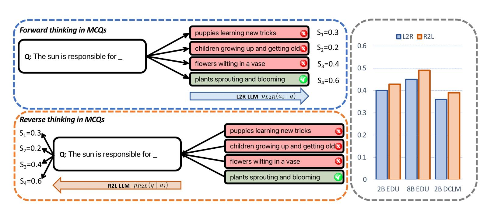

Most modern languages are written from left to right, thus we assume that thinking from left to right is the most natural way to process information expressed with these languages. This is particularly true for Large Language Models (LLMs) which are typically trained to predict the next word in a sequence, known as left-to-right (L2R) language models. But what if, for certain tasks, thinking backward could actually be better? A recent paper from Apple researchers, titled "Reversal Blessing: Thinking Backward May Outpace Thinking Forward in Multi-choice Questions", explores a counterintuitive approach to data augmentation: training LLMs on "reversed" sequences. It delves into the potential of right-to-left (R2L) language models, and their effectiveness in tackling some tasks such as multiple-choice questions (MCQs). The paper can be found here, and the supporting code can be found in the GitHub repository here.
Left‐to‐right (L2R) Autoregressive Factorization
Most LLMs are trained to predict text in a strictly left‐to‐right order. Left-to-right autoregressive (L2R) factorization is the fundamental mathematical principle underlying how large language models generate text. It's based on decomposing the probability of a sequence into conditional probabilities.
The Theory
Given a sequence of tokens \(x_1,x_2, ... , x_n\), the joint probability can be factorized using the chain rule of probability:
This can be written more compactly as:
The key insight is that we model each token's probability as dependent only on the tokens that came before it (hence "left-to-right"). This creates a causal dependency structure where future tokens cannot influence past tokens. Unfortunately, this approach can introduce inductive biases, errors compounding at each step, and may not be optimal for all reasoning or knowledge‐retrieval tasks
Now, let's formally define the L2R factorization with the notation we are going to use throughout the post. For any sequence \(x = (x_1, x_2, ..., x_T)\), we can express the joint probability as
where \(x_{<t} = (x_{1}, x_{2}, ..., x_{t-1})\). At each timestep \(t\), the model predicts the next token \(x_t\) given the full prefix \(x_{<t}.\) This factorization is not unique, any valid factorization of the joint probability yields the same marginal \(p(x)\).
We are also going to need the log-lokielhood of the sequence, which is
You might wonder why we are going to use the log-likelihood. The most straightforward reasons are:
- Numerical stability: Multiplying many small probabilities leads to underflow, whereas adding logs is stable
- Training objective: LLMs minimize negative log-likelihood (cross-entropy loss)
- Easier optimization: Sums are easier to differentiate than products
For "The cat sat." we would have:
How LLMs Implement This
Language models learn to approximate each conditional probability \(P(x_i | x_1, ..., x_{i-1})\) through:
- Encoder layers that build rich contextual representations of the preceding tokens
- Attention mechanisms that allow each position to attend to all previous positions (but not future ones via causal masking)
- Output layer that converts the contextual representation into a probability distribution over the vocabulary
During training, the model sees the entire sequence but uses causal masking to ensure position \(i\) only sees tokens \(1\) through \(i-1\). During inference, generation happens token by token, with each new token sampled from the predicted distribution.
Example
For the sequence "The cat sat.":
| Step \(t\) | Context \(x_{<t}\) | Model outputs distribution over next token | Picked token |
|---|---|---|---|
| 1 | ( ) | \(P(\text{“The”})=0.4,\ P(\text{“A”})=0.3,\dots\) | “The” |
| 2 | (“The”) | \(P(\text{“cat”}\mid \text{“The”})=0.5,\dots\) | “cat” |
| 3 | (“The”, “cat”) | \(P(\text{“sat”}\mid \text{“The cat”})=0.6,\dots\) | “sat” |
| 4 | (“The”, “cat”, “sat”) | \(P(\text{“.”}\mid…)=0.8,\dots\) | “.” |
Right‐to‐left (R2L) Autoregressive Factorization
Right-to-left autoregressive factorization is the mathematical "mirror image" of left-to-right, where we factorize the probability by conditioning each token on all the tokens that come after it instead of before.
The Theory
Given a sequence of tokens \(x_1, x_2, ..., x_n\), we can factorize using the chain rule in reverse order:
This can be written as:
This is a bit strange to say it like that, but now each token's probability depends on all the tokens that come after it in the sequence. In simple words, R2L is predicting earlier tokens given later ones. You probably immediately asked "But how?", and later you are going ot see the answer is "With the help of Bayes' rule".
Now, let's also formally define the R2L factorization. For any sequence \(x = (x_1, x_2, ..., x_T)\), we can express the joint probability as
where \(x_{>t} = (x_{t+1}, x_{t+2}, ..., x_T)\). And for the log-likelihood, we have
Although both L2R and R2L factorizations represent the same distribution \(p(x)\) in theory, neural approximations break symmetry: reversed factorization leads to different learned behaviors, calibration properties, and uncertainties.
Example
| Step \(t\) | Context \(x_{>t}\) | Model outputs distribution over \(x_t\) | Picked token |
|---|---|---|---|
| 4 | ( ) | \(P(\text{“.”})=0.7,\dots\) | “.” |
| 3 | (“.”) | \(P(\text{“sat”}\mid “.”)=0.6,\dots\) | “sat” |
| 2 | (“sat”, “.”) | \(P(\text{“cat”}\mid\text{“sat.”})=0.5,\dots\) | “cat” |
| 1 | (“cat”, “sat”, “.”) | \(P(\text{“The”}\mid\text{“cat sat.”})=0.4,\dots\) | “The” |
Key Questions
The paper investigates the following three questions:
- How to evaluate R2L models on knowledge extraction and basic reasoning tasks?
- Can R2L factorization match or surpass L2R’s capabilities in knowledge extraction and reasoning for downstream tasks?
- What are underlying factors determining the preference of L2R or R2L factorizations?
Multiple‐Choice Questions
Multiple‐choice questions (MCQs) are a common benchmark for evaluating an LLM’s knowledge, reasoning, and calibration. As we can see in Figure 1, in their simplest form, an MCQ comprises:
- A question \(q\)
- A set of \(n\) candidate answers \(a_1, \dots, a_n\)
- Exactly one correct answer \(a^{*}\) among these \(n\) choices

Most L2R‐based LLMs approach MCQs by computing, for each candidate \(a_i\), the conditional log‐probability:
Normalizing by answer length \(|a_i|\), we obtain the forward‐thinking score
and the predicted answer is
However, L2R forward thinking can suffer from surface‐form competition and calibration issues. For example, if two semantically equivalent answers (“dog” vs. “puppy”) each capture only a portion of the probability mass, the true answer may be penalized just because its mass is split.
The alternative, reverse thinking, leverages an R2L model. By Bayes’ rule, for each candidate \(a_i\)
Since \(\log p(q)\) is constant across candidates, we can define an unnormalized reverse score:
or, if one enforces a uniform prior over answers (i.e.\ discards \(\log p(a_i)\)), simply:
Crucially, reverse thinking bypasses surface‐form competition among answer strings, because all candidates condition on the same question \(q\) thus, the model only needs to evaluate \(p(q \mid a_i)\).
Mathematical Formulation: L2R vs. R2L on MCQs
L2R on MCQs
Given a question \(q\) answer candidates \(\{a_1, a_2, \dots, a_n\}\), aan L2R model computes, for each \(i\),
where \(N_i = |a_i|\) is the token length of answer \(a_i\). To normalize for varying lengths, define
The chosen answer index is
Because the model is trained to maximize \(\log p(x)\) in the L2R direction, it is inherently good at predicting a short correct answer string next given a fixed question prefix. However, if the correct answer has multiple valid encodings (e.g., synonyms, morphological variants), the probability mass \(p_{L2R}(a_i \mid q)\) may be spread across these variants, reducing the normalized score \(s_i^{(L2R)}\).